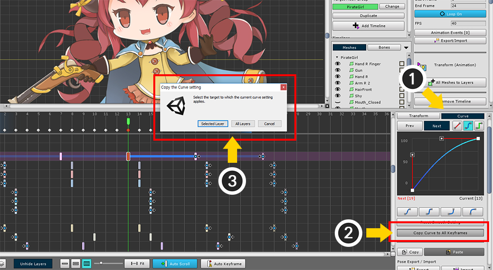
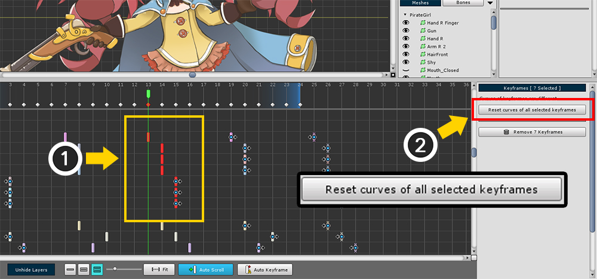
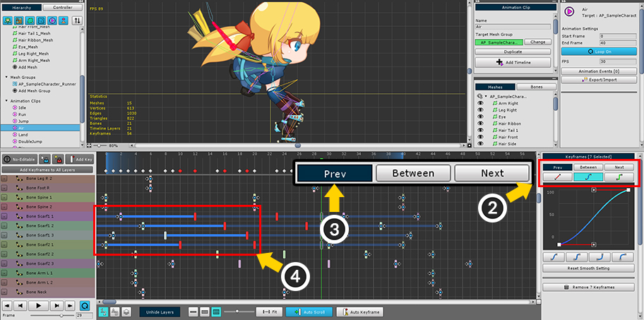
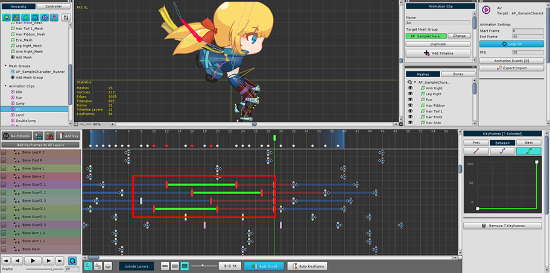
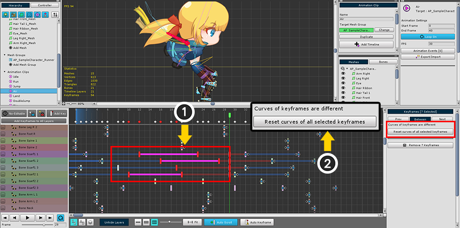

AnyPortrait > Manual > Setting Animation Curves in batch
Setting Animation Curves in batch
1.2.2
This page introduces several ways to edit the animation curves of keyframes at once.
Copy animation curves to all other keyframes

With one keyframe selected, (1) select the Curve tab.
After editing an animation curve, you can copy the shape of the curve to another keyframes.
(2) Press the "Copy Curve to All Keyframes" button.
(3) Select whether to copy to "Keyframes of the currently selected layer" or "All keyframes".
Edit animation curves of selected keyframes in batch

(1) Select all keyframes to edit.
If the animation curves of the selected keyframes are not same, the above screen appears.
(2) Press the "Reset curves of all selected keyframes" button to reset the animation curve settings.

The animation curves of the selected keyframes have been set equal.
Now you can edit animation curves in the right screen in batch.
Separate and edit animation curves of selected keyframes
When batch editing the animation curves of keyframes, starting with AnyPortrait v1.2.2, you can edit the curves before and after the keyframe and between the keyframes separately.

(1) Let's select keyframes.

(2) Three buttons, Prev, Between, and Next, have been added to the top of the curve editing screen.
(3) Press the Prev button, and (4) the curves corresponding to the previous of the selected keyframes are selected.

(1) Press the Between button (2) among the selected keyframes, curves located between successive keyframes are selected.

(1) Press the Next button, and (2) the curves located after the selected keyframes are selected.

Since the curves can be selected separately, it is easier to edit the curves differently according to the area as above.

If the selected curves do not have the same value,
(1) The curve section is displayed in purple.
(2) Press the Reset curves of all selected keyframes button to make the curves the same.